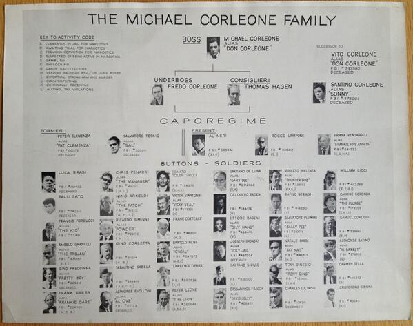

Family (Biological)
The godfather was born
Vito knew nothing of a life of crime, and lived a decent, hardworking life working for his friend, Genco Abandando's father, who owned a local grocery store. Vito was laid off from this job when a local Mafia Chieftan, Don Fanucci, who forced local store owners to pay tributes from their daily profits made the owner hire his nephew.
Having to feed his young family, consisting of only Fredo and Sonny at the time, he met a young man from the neighborhood named Peter Clemenza who quickly introduced Vito to a life of crime. He quickly established himself as the leader of his crime crew after assassinating Don Fanucci during a relifious festival because the mafia chief was cutting into his turf and profits, and young Vito saw his murder as both a way to take over the neighborhood while also ridding himself of his main rival, thereby earning him respect and the title of Don.
Frequently throughout the Godfather, religion is sprinkled in when they are committing murder, somehow justifying Corleone Family hits with montages of God and religious overtones.
Family (Crime)
Vito's friend, Genco Abandando, would go on to become the Family's Consiglierie, or advisor to the Don, while Peter Clemenza and their other crime partner, Salvatore Tessio, would become the Family's Caporegimes, or Captains, both in charge of their own crime crews.
Upon Don Vito's death of a heart attack, his youngest son Michael, a war hero and very much against his father's role in a life of crime at first, before turning his loyalty back to the "Family" after an assassination attempt on his father's life in the French Hospital in Chelsea, completely shook up the crime family.